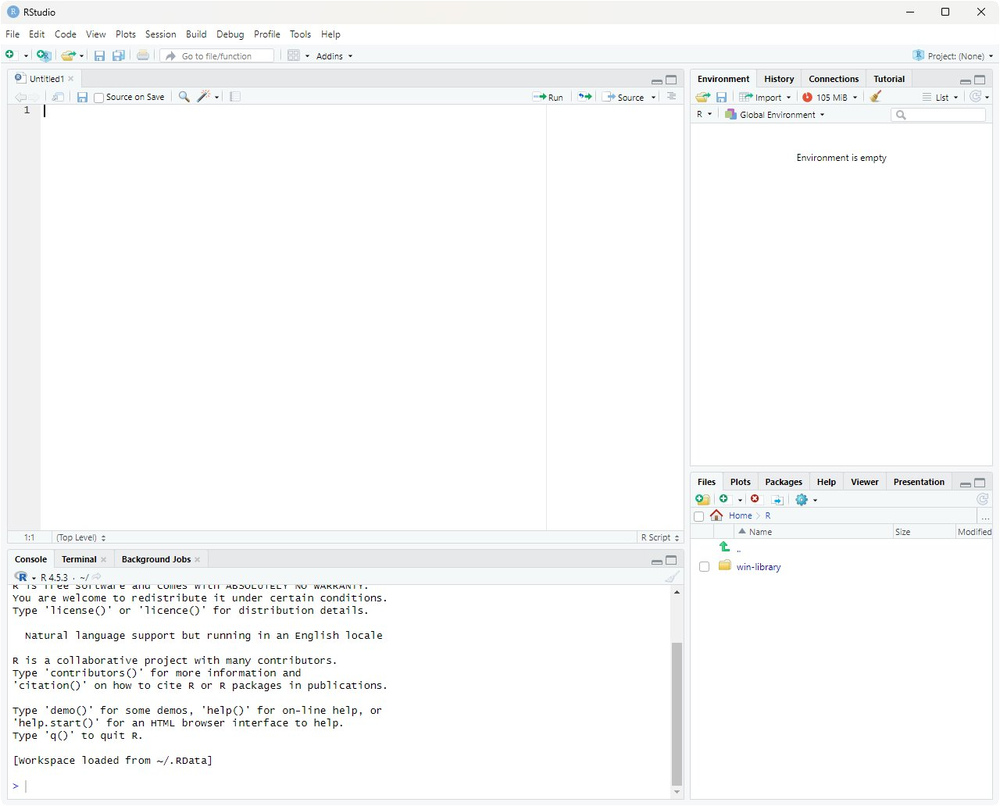

How to use this guide
1 Each chapter introduces one concept with self-contained examples in code blocks. Click Run to execute the code — the output appears below the cell.
2 Every exercise has an empty editor where you write your own code. Use Just run to test how it behaves, or Run & check to find out whether your answer is correct.
3 Click Reveal solution when you're ready to compare. Try the exercise yourself first!
⚠️ A note on errors: you will get error messages, and that's normal. Read them carefully — they're R telling you exactly where it got confused. Common culprits: a missing parenthesis, a typo, or forgetting a comma.
Welcome to R
R is a free programming language built for working with data. In watershed ecology, it's used for almost everything: analyzing stream chemistry, estimating discharge, modeling nutrient loads, examining macroinvertebrate community composition, and producing publication-quality figures from monitoring data. By the end of this guide, you'll be able to do real watershed data analysis in R.
You don't need any programming experience. We'll go step by step, and there are exercises throughout to help you practice. Each exercise is followed by a worked solution so you can check your answer and understand the reasoning.
Two ways to use R
You have two options for working with R. Both run the same R language; the difference is where the code lives.
Right here in your browser. Every gray code cell on this page is a tiny live R session. Click Run and the code executes immediately, with output shown below the cell. You don't have to install anything. This is great for learning the language and working through this guide.
On your own computer with R and RStudio. For real work — projects, assignments, research — you'll want R installed locally so you can save your work, manage data files, and use the full suite of R packages. The rest of this chapter walks you through installing both pieces and explains how the desktop environment compares to the in-browser cells you'll use here.
Installing R and RStudio
You need two separate downloads. R is the language itself. RStudio is the editor you use to write and run R code. Install R first, then RStudio.
Step 1 — Install R
Go to cran.r-project.org (the Comprehensive R Archive Network). Pick the link that matches your operating system:
- Windows: Click "Download R for Windows" → "base" → "Download R-X.X.X for Windows". Run the installer with default settings.
- macOS: Click "Download R for macOS" and download the
.pkgfile matching your processor. Apple Silicon Macs (M1/M2/M3/M4) use the "arm64" build; older Intel Macs use the "x86_64" build. If you're not sure, click the Apple menu → About This Mac to check. - Linux: Click "Download R for Linux" and follow the instructions for your distribution. On Ubuntu/Debian, the simplest command is
sudo apt install r-base; on Fedora,sudo dnf install R. CRAN also has more recent builds maintained directly by the R project — check the page for your distribution.
Step 2 — Install RStudio
Go to posit.co/download/rstudio-desktop. (RStudio is now made by a company called Posit, but the software is still called RStudio.) The page should auto-detect your OS and show the right download. Run the installer.
Once both are installed, you only ever open RStudio — it finds and uses the R installation behind the scenes. You generally don't open R directly.
What RStudio looks like
When you open RStudio for the first time, you'll see a window divided into four panes. The screenshot below shows the typical layout:

Each pane has a distinct job. Here's what they do:
-
Source editor (top-left) — where you write and save R scripts. A script is just a text file ending in
.Rthat contains R code. You type code here and run it line-by-line (with Ctrl+Enter on Windows/Linux, Cmd+Return on Mac), or run the whole script at once. - Environment / History (top-right) — shows everything currently in memory. Variables, vectors, data frames you've created — all listed here with their values or dimensions. Think of it as a live inventory of your R session. Clicking a data frame opens it in a spreadsheet-style viewer, which is really helpful for inspecting datasets. The History tab shows every command you've ever typed in the current session.
- Console (bottom-left) — the live R prompt. Anything you type here is executed immediately and the result appears right below. The console is what's actually running your R commands; the Source editor pane is just a place to write code that you then send to the console. When you click "Run" on a code cell on this webpage, you can think of it as sending that cell's contents to a hidden console.
-
Files / Plots / Help / Packages / Viewer (bottom-right) — a multi-purpose pane.
- Files browses your project folder.
- Plots displays figures you create with
plot(),ggplot(), etc. — you can flip back through every plot you've made. - Help shows R's built-in documentation. Type
?meanin the console and the help page formean()appears here. - Packages lists installed packages and lets you install new ones.
- Viewer shows HTML output (knit reports, interactive widgets).
Projects and working directories
Once you start doing real analyses you'll have a folder full of related files: your R scripts, raw data, figures, and notes. Two RStudio concepts help you keep them organized.
The working directory. R has a notion of a "current folder" — the place it looks for files when you say things like read.csv("nitrate.csv"). That folder is called the working directory. You can ask R where it currently is with getwd(), and you can change it with setwd("/path/to/folder"). If R can't find a file you're trying to read, the most common reason is that your working directory is somewhere else and R is looking in the wrong place.
RStudio Projects. An RStudio Project is just a folder with a small .Rproj file inside it. When you open a project (File → Open Project, or by double-clicking the .Rproj file), three useful things happen:
- Your working directory is automatically set to the project folder. No more
setwd()with hardcoded paths. - RStudio remembers which scripts you had open last time, so you pick up where you left off.
- Variables you defined in your last session can optionally be restored.
The recommended workflow is: one project per analysis. For a class assignment, make a folder called something like watershed-bioassessment, create a new RStudio Project in it (File → New Project → New Directory), and put all your scripts and data inside. When you reopen the project a week later, you won't have to remember anything about where files live — R already knows.
A typical project folder might look like this:
watershed-bioassessment/— the project rootwatershed-bioassessment.Rproj— the project filedata/— raw data files (CSVs, shapefiles)scripts/— your.Ranalysis scriptsfigures/— plots you generateREADME.md— a brief note describing the project
With this structure and a project file, references like read.csv("data/nitrate.csv") work the same on your laptop, your collaborator's laptop, and the lab computer. No absolute paths needed.
The R authoring environment
So far we've talked about R (the language) and RStudio (the editor). But when you start writing real analyses, you'll encounter a few more terms: IDE, R scripts, and R Markdown / Quarto documents. These are the three things that make up your day-to-day R workflow, and it's worth a quick tour before we head into the actual coding chapters.
RStudio is an IDE
RStudio is what's called an integrated development environment, or IDE for short. The name is more intimidating than the idea: an IDE is just a single application that bundles together the tools you need to write code. You've already seen the four panes — the source editor, the console, the environment viewer, and the files/plots/help pane. Each of those is a separate tool, but RStudio integrates them into one window so you don't have to juggle multiple programs.
Other languages have their own IDEs (VS Code, PyCharm, Eclipse, Xcode). For R, the dominant choice is RStudio. You could write R code in any plain text editor and run it from a terminal, but RStudio's tight integration of the console, plots, and help pages makes it dramatically more pleasant.
R scripts: the standard file format
An R script is a plain text file with the extension .R. It contains nothing but R code (and comments). When you run a script, R executes the lines from top to bottom as if you'd typed them into the console one at a time. Here's what a small script might look like:
Scripts are the right tool when your output is the analysis itself — a script that loads data, fits a model, and saves a figure to disk. They're the workhorses of reproducible research: anyone with the same data can run your .R file and get the same results. Most assignments and most published analysis pipelines are built from one or more .R scripts.
R Markdown and Quarto: writing with code
Sometimes the deliverable isn't just the analysis but a document — a lab report, a methods write-up, a thesis chapter. For these, plain .R scripts aren't quite right because you also want explanations, headings, equations, figures, and tables, all woven together with the code that produced them.
That's what R Markdown (.Rmd files) and Quarto (.qmd files) are for. They're two closely-related formats — Quarto is Posit's newer, more flexible successor to R Markdown — that let you mix writing and code in one file. Quarto is increasingly the modern default, but the two work so similarly that you can treat them as one topic for now. We'll just call them "Rmd/Quarto" here.
Inside one of these files, prose is written as ordinary text (with markdown formatting for things like bold and headings), and R code lives in code chunks: small blocks fenced off by triple-backticks with {r} at the top. When you press Knit (for Rmd) or Render (for Quarto) in RStudio, the file is processed end-to-end: each code chunk runs, its output is captured (numbers, tables, figures), and everything is woven into a polished output document — usually HTML, PDF, or Word.
A typical chunk inside an Rmd/Quarto file looks like this:
For example: a watershed bioassessment lab report might have an introduction paragraph, a code chunk that loads the field data, another paragraph describing the analysis, a chunk that fits a linear model and prints the summary, then a chunk that produces a final figure — all in one .Rmd or .qmd file. When you knit it, the result is a single PDF or HTML document with the prose flowing naturally around the figures and tables generated by your code. No copy-pasting between R and Word. If the data updates, you just re-knit and everything regenerates.
How this webpage compares to all of the above
The code cells you'll use throughout this guide sit in an interesting middle ground. Conceptually, they're closest to Rmd/Quarto chunks — prose and runnable R code interleaved on a page — except that this page is fixed and you don't render anything. Compared to working in RStudio with real .R or .qmd files, the code cells here are intentionally simpler:
- Persistence between cells. Each cell on this webpage runs in a fresh R environment, so variables you create in one cell are not automatically available in the next — that's why some exercises ask you to recreate a data frame at the top of your answer. In RStudio (script or notebook), your variables persist for the entire session.
- Saving your work. Code typed into a cell here lives only as long as the browser tab is open.
.R,.Rmd, and.qmdfiles all save to your computer where you can edit, version-control with git, and share them. - Packages. Only a handful of R packages are pre-loaded in your browser (we have
ggplot2, but not the full tidyverse). In RStudio you can install any of the ~20,000 packages on CRAN with a single command. - Data files. The cells here can't read CSVs or other files from your hard drive. In RStudio you'll routinely use
read.csv(),read_csv(), or specialized functions likedataRetrieval::readNWISdv()to pull discharge records straight from the USGS. - Knitting / rendering. This page is hand-written HTML; nothing gets rendered from a source document. With Rmd/Quarto, the file you write is the source — you knit it whenever you want to produce the final output.
- Speed. The browser version downloads R-compiled-to-WebAssembly the first time you visit, which takes ~30 seconds. R running locally through RStudio is at native speed once installed.
The code cells here are good enough to work through this guide — you can focus on learning R without worrying about installation, file paths, or knitting. Once you're ready to do your own analyses, you'll likely use .R scripts for the analysis itself and .Rmd/.qmd documents to write up the results. The beauty is that the R syntax you learn here works identically in all three.
Terminology: Code, Functions, and Operators
Before you write your first line of R, a few vocabulary words will save you a lot of confusion. This short chapter introduces the four terms — code, comments, functions, and operators — that show up on every page of this guide. Once these click, the rest of the syntax stops looking like a foreign language.
Code
Code is just text — instructions written for the computer to follow. Each line tells R to do something specific. R reads your code top to bottom, one line at a time, and does exactly what you say. There's no magic; if R does something unexpected, it's because the code told it to. Reading the line carefully is almost always the first step in fixing a bug.
Lines that start with # are comments — notes for humans that R ignores completely. Comments are how you explain to your future self (or a classmate) what your code is doing:
Functions
A function is a named procedure that takes one or more inputs and gives back a result. You can think of a function like a labeled machine: you put something in, the machine does its job, and something comes out. R comes with thousands of functions built in, and you'll learn many of them throughout this guide.
You "call" (run) a function by writing its name followed by parentheses. Whatever you put inside the parentheses is the input (sometimes called an argument). For example, sqrt() is the square-root function:
The parentheses are essential. sqrt(16) calls the function on 16, but sqrt by itself just refers to the function as an object — like saying the word "calculator" instead of actually using one. Forgetting parentheses, or having them in the wrong place, is the single most common source of beginner errors. If R gives you a confusing message, count your parentheses first.
You'll see this same pattern everywhere in R. mean(x) takes a vector x and gives back its average. length(x) gives you how many items are in x. read.csv("nitrate.csv") reads a CSV file. The pattern is always function-name followed by parentheses around the input.
Operators
An operator is a special shortcut symbol that acts like a tiny function. You've used them in math your whole life: +, -, *, /. R has the same arithmetic operators, plus a few R-specific ones like <- (used to store values in variables, which we'll see in the next chapter) and == (which checks whether two things are equal).
Operators don't use parentheses around their inputs — they sit between them. So 2 + 3 is an operator (+) acting on two numbers, while sum(2, 3) is a function (sum) acting on two numbers. Both give 5; the syntax is just different.
That's the whole vocabulary you need to start reading R code: code is what you type, comments are notes for humans, functions are named procedures called with parentheses, and operators are shortcut symbols. With those four ideas in mind, the rest of this guide should feel a lot less mysterious.
Variable Assignment: Storing Values
A variable is a named container that holds a value. Once you store something in a variable, you can refer to it by name in later calculations. This saves typing and makes your code easier to read.
In R, we assign values using the arrow operator <-. Read it as "gets":
You can use variables in calculations:
Naming rules
Variable names should be descriptive. nitrate_mg_per_L is far better than x because anyone reading your code (including future-you) will know what it means. A few rules:
- Names can contain letters, numbers, dots, and underscores
- Names must start with a letter
- R is case-sensitive:
Dischargeanddischargeare different variables - Avoid using names of built-in functions like
mean,sum, orc
A stream's cross-section has a measured width of 4.2 meters and an average depth of 0.35 meters. The mean current velocity is 0.68 meters per second. Create three variables to store these values, then compute discharge using the velocity-area method:
Q = w × d × v
where Q is discharge (m³/s), w is width (m), d is mean depth (m), and v is mean velocity (m/s). Print the result.
Reveal solution
Explanation. We stored each measurement in a clearly named variable, then translated the equation directly. The velocity-area method is the most basic field technique for measuring stream discharge, and it's the foundation for more sophisticated methods you'll encounter later (like the midsection method that integrates across multiple verticals). A discharge of about 1 m³/s indicates a small to mid-sized headwater stream.
Vectors: Lists of Values
In watershed ecology, you almost never make just one measurement — you sample across sites, dates, or depths. A vector is an ordered list of values of the same type (all numbers, or all text). You build vectors with the c() function, which stands for "combine."
Math on vectors
R applies math operations to every element of a vector at once. This is called vectorization, and it's one of the most powerful features of R:
length() here means the number of items in the vector, not stream length. R uses the word in the general sense.
Pulling out specific values
Use square brackets [ ] to access individual elements. R indexes from 1 (not 0):
You can also pull out values that meet a condition. This is called logical subsetting:
You measured nitrate concentrations (mg N/L) at 10 sites across an agricultural watershed: 0.42, 1.85, 0.31, 2.94, 1.12, 0.58, 3.21, 0.27, 2.05, 1.43.
- Store these in a vector called
nitrate. - Calculate the mean and standard deviation.
- The EPA recommends a threshold of 1.0 mg/L for ecologically meaningful nitrate enrichment. How many sites exceeded this threshold?
Reveal solution
Explanation. Part (c) uses a clever trick. The expression nitrate > 1.0 returns a vector of TRUE/FALSE values — one for each site. When you call sum() on logical values, R counts the TRUEs. So sum(nitrate > 1.0) is just "how many sites exceeded the threshold?" You'll use this pattern constantly when screening monitoring data against water quality criteria.
Data Frames: The R Spreadsheet
A data frame is R's version of a spreadsheet. It has rows (typically one per sample, site, or sampling date) and columns (one per measurement or variable). Data frames are the workhorse of data analysis.
Let's build a small data frame from a hypothetical synoptic stream survey:
The ept_taxa column counts the number of Ephemeroptera, Plecoptera, and Trichoptera (mayfly, stonefly, and caddisfly) taxa — a common bioindicator where higher numbers generally suggest better water quality.
Inspecting a data frame
Real datasets often have hundreds or thousands of rows, so you usually want a quick look rather than the whole thing:
Accessing columns and filtering rows
Use the dollar sign $ to grab a single column:
The & symbol means "AND" (both conditions must be true). The | symbol means "OR" (either can be true).
Using the stream_data data frame from the example above (you'll need to recreate it in your answer cell — code persists between runs in the same cell, but each cell starts fresh):
- What's the average EPT richness at just the forested sites?
- How many urban sites are in the dataset?
- Pull out a data frame containing only sites with temperature below 15°C.
Reveal solution
Explanation. In part (a), the inner part stream_data$land_use == "Forest" gives us a TRUE/FALSE vector marking which rows are forest sites. We use that to subset stream_data$ept_taxa, keeping only the EPT counts from forest sites. Reading from the inside out is a useful habit when code looks complicated. Notice the dramatic difference: forest sites average around 18 EPT taxa, while the urban sites average around 4 — exactly the pattern bioassessment programs are designed to detect.
Operators: R's Vocabulary
Arithmetic operators
Comparison operators
These return TRUE or FALSE:
= vs == trap. A single = assigns a value (like <-). A double == checks whether two things are equal. Mixing them up is the single most common beginner bug. If you see strange behavior in a filter, this is the first thing to check.
Logical operators
You're screening a stream site for compliance with two water quality criteria: DO must be at least 6.0 mg/L AND temperature must be below 20°C for it to be considered suitable habitat for a sensitive coldwater species. Given the measurements below, write a single line of code that returns TRUE if the site meets both criteria and FALSE otherwise.
Reveal solution
Explanation. A two-part water quality criterion translates directly to a logical AND. Both parts have to be true: DO at or above the minimum AND temperature below the maximum. Try changing site_do to 4.5, then site_temp to 22, and re-running to see how the result changes. This same logic pattern scales directly to filtering whole datasets — same &, same ==, just applied to columns instead of single values.
Translating Equations into Code
Watershed ecology is full of equations — runoff models, nutrient load calculations, dilution equations, hydraulic geometry relationships. A core R skill is taking an equation off a textbook page and turning it into working code.
Manning's equation for open-channel flow
v = (1/n) · R2/3 · S1/2
where v is mean velocity (m/s), n is Manning's roughness coefficient, R is hydraulic radius (m), and S is the channel slope (m/m).
Pollutant load calculation
L = C × Q × k
where L is load (kg/day), C is concentration (mg/L), Q is discharge (m³/s), and k is the unit conversion factor 86.4.
The Streeter-Phelps deficit equation describes how dissolved oxygen recovers downstream of a pollution source. A simplified version for the DO deficit at a given travel time is:
Dt = D0 · e−k₂t
where D0 is the initial DO deficit (mg/L), k₂ is the reaeration rate constant (per day), and t is travel time (days). In R, exp(x) computes e raised to the power of x.
A point source produces an initial DO deficit of 4.5 mg/L. The stream has a reaeration rate of 0.35 per day. What is the DO deficit 3 days downstream?
Reveal solution
Explanation. This is a classic textbook calculation in stream chemistry. The result (~1.58 mg/L) means the deficit has decayed substantially — about two-thirds of the way back toward saturation — over those three days. Storing inputs as named variables (rather than typing the numbers directly into the equation) makes it trivial to recalculate Dt for a different travel time or reaeration rate. This is also the foundation of the more complete Streeter-Phelps model that you'll see in water quality modeling courses.
Calculations Across Data Frame Columns
Because columns are vectors, you can do math across an entire column in one line — no loops needed. R automatically applies the operation row by row.
In four lines of code, we computed four new variables for all ten sites at once. If the dataset had 10,000 sites, the code would be exactly the same.
The Specific Conductance-Total Dissolved Solids (TDS) relationship is widely used in watershed monitoring. A common rule-of-thumb conversion is:
TDS (mg/L) = 0.65 × SC (μS/cm)
The EPA's general guidance is that TDS values above 500 mg/L are concerning for many beneficial uses. Using the data frame in your answer cell:
- Add a
tds_mgLcolumn with the estimated TDS for each site. - Add a
tds_concerncolumn that is TRUE if TDS exceeds 500 mg/L. - Filter the data frame to show only the sites of concern.
Reveal solution
Explanation. Each line does the calculation for every site in the dataset at once — that's vectorization at work. In part (c), we used the new logical column directly inside the brackets. The conversion factor of 0.65 is itself a simplification — the true ratio depends on the dominant ions in solution and ranges from about 0.55 (NaCl-dominated) to 0.9 (CaSO₄-dominated). A real analysis would calibrate the factor for your specific watershed.
For Loops: Repeating Over a Set of Values
A for loop runs a block of code once for each item in a sequence. Use it when you know in advance what set of values you want to iterate over — a list of sites, a series of years, a vector of measurements. (Use a while loop, which we'll see in the next chapter, when you don't know how many iterations you'll need.)
The syntax reads almost like English: for (each item in my_list) do something with item:
Inside the parentheses, i is a variable name we chose — it takes on each value of the sequence 1:5 in turn. You can name the loop variable anything you like (often i or j for indices, or something descriptive like site or year).
A watershed example: looping over sites
Suppose you have a vector of stream site names and you want to print a quick status report for each one:
The loop variable site takes on each character string in turn. The paste() function glues strings together with a space between them.
Building up a result inside a loop
A common pattern is to start with an empty container, then accumulate values as the loop runs. Here we compute a running total of monthly precipitation, recording the cumulative total after each month:
Notice the pattern: we initialized running_total as an empty numeric vector with the right length, set the first element by hand, then used the loop to fill in each subsequent element by adding the next month's precipitation to the previous total. This kind of iterative accumulation is the bread and butter of for loops.
running_total <- cumsum(monthly_precip). For loops are still useful when each iteration depends on a previous result, when you're calling a complicated function on each item, or when you want explicit step-by-step control. As you write more R, you'll develop a feel for which approach fits the situation.
You have 14 days of mean daily discharge (m³/s) from a small stream:
discharge <- c(2.1, 2.4, 8.7, 5.3, 3.2, 2.6, 2.3, 1.9, 2.0, 12.4, 7.8, 4.1, 2.5, 2.2)
A "storm flow day" is any day where discharge exceeds 5.0 m³/s. Use a for loop to count the number of storm-flow days. Store your answer in a variable called storm_days and print it.
Hint: start with storm_days <- 0, then loop through each value in discharge and use an if statement inside the loop to check if it exceeds 5.0.
Reveal solution
Explanation. The loop variable q takes on each discharge value in turn. We test each value against the threshold and increment the counter when it exceeds 5.0. Three days qualify: 8.7, 12.4, and 7.8 m³/s. As mentioned in the tip above, the vectorized one-liner sum(discharge > 5.0) would give the same answer in less code — but the loop version makes the logic explicit, which is often what you want when teaching or debugging. As your loops get more complex (for instance, accumulating multiple statistics per site), the loop approach scales naturally; the vectorized approach can become harder to read.
While Loops: Repeating Until a Condition is Met
A while loop runs a block of code repeatedly as long as a condition stays true. It's the right tool when you don't know in advance how many iterations you'll need — you just know when to stop.
A watershed example: simulating a reservoir filling
A small reservoir starts at 40% capacity. Inflows raise its level by 4 percentage points per day during a wet period. How many days until it reaches at least 95%?
A closed pond receives a one-time pulse of a contaminant at a concentration of 12.0 mg/L. The contaminant decays at a first-order rate of 8% per day, meaning each day the concentration drops to 92% of its previous value. Use a while loop to determine how many days it will take for the concentration to fall below 1.0 mg/L. Print both the number of days and the final concentration.
Reveal solution
Explanation. The structure mirrors the reservoir example, but we're shrinking a value rather than growing it. The condition concentration >= 1.0 keeps the loop running as long as the contaminant is at or above the threshold. Each iteration applies one day of first-order decay (multiplying by 0.92). The final value is slightly below 1.0 because decay happens in discrete daily steps — a useful reminder that simulations make choices about time steps. First-order decay is the most common model for contaminants in surface water.
Linear Models: Fitting Relationships in Data
A linear model describes the relationship between a response variable and one or more predictor variables. R fits linear models with the lm() function. The syntax y ~ x reads as "y is modeled as a function of x."
Stage-discharge rating curve
The relationship between stream stage and discharge typically follows a power law Q = a · hb, which becomes linear after taking logs of both sides:
log(Q) = log(a) + b · log(h)
You measured nitrate concentration along a longitudinal gradient downstream of an agricultural field, recording the distance (km) from the field edge and the resulting concentration (mg N/L).
- Combine these into a data frame called
gradient_data. - Fit a linear model predicting nitrate from distance.
- Use
coef()to extract the slope, and interpret what it means in terms of the watershed processes acting on nitrate.
Reveal solution
Explanation. The slope of approximately −0.74 means nitrate decreases by about 0.74 mg N/L for every additional kilometer downstream of the source. Biologically, this attenuation reflects a combination of in-stream processes — dilution from groundwater and tributary inputs, biological uptake by algae and biofilms, denitrification in hyporheic and riparian zones, and physical dispersion. A linear model isn't always ideal for this kind of decay (a first-order exponential decay is often more mechanistically appropriate), but for a short reach it's a reasonable first approximation.
Plotting in Base R
R has plotting tools built right into the language. Plots produced in code cells appear below the cell as images.
Boxplots compare distributions across groups
Using the gradient_data from Exercise 11.1, make a scatterplot of nitrate vs. distance and add the fitted regression line using abline(). Hint: when both axes are on the original scale, you can pass the model directly to abline().
Reveal solution
Explanation. abline() automatically extracts the intercept and slope from a one-predictor model and draws the line. This wouldn't work for a log-log model because the line is straight only on the log scale — there you'd use predict() and lines() instead.
Plotting in ggplot2
ggplot2 uses a layered approach — you start with a blank canvas, map data to visual elements, then add geoms (points, lines, bars), labels, and themes with the + operator.
aes() vs outside: use aes() for data-driven aesthetics (color = a column), and put fixed values like color = "steelblue" outside. This trips up everyone at first.
Using gradient_data, make a ggplot scatterplot of nitrate (y) vs. distance (x), add a linear smoother with geom_smooth(method = "lm"), and include an informative title and axis labels with units.
Reveal solution
Explanation. ggplot2 gives us a confidence ribbon "for free" and cleaner default styling. Most watershed and aquatic ecology articles you'll read in 2026 use ggplot2 — it's worth the investment to learn it well. Always specify whether you mean mg-N/L (just the nitrogen) or mg-NO₃/L (the whole molecule) — they differ by a factor of 4.4.
Putting It All Together
Let's combine everything you've learned into a mini analysis. We'll simulate a synoptic stream survey, compute derived metrics, fit a stressor-response model, and visualize the results.
This 30-line analysis touches every concept from the guide: variables, vectors, data frames, operators, equations, column-wise math, while loops, linear models, and plotting. Real watershed analyses are just longer versions of this same pattern — and the stressor-response framework you see here is essentially the foundation of state and federal bioassessment programs.
Where to Go Next
⌘
Programming is a skill that rewards practice far more than it rewards reading. Open RStudio, type the examples in this document yourself, change the numbers, break things, and fix them. After a few weeks of regular use, R will feel less like a foreign language and more like a tool you reach for instinctively whenever data shows up.
— Welcome to watershed science in the modern age.